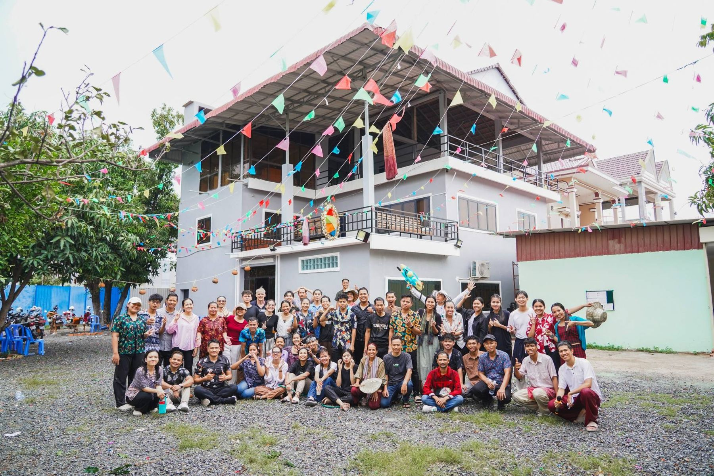
Join me to discover what God is doing in this nation — and how you might be a part of it.
A week to walk the ground, meet the people carrying the work, and prayerfully consider your part in it.
Cambodia carries a hard history — and a hopeful present. After the Khmer Rouge, the church numbered barely 250. Today it's 500,000 — and a movement of leaders is believing for 2 million, one-tenth of the nation, to follow Jesus by 2033, in a country where most people are under thirty. We'll see it up close: schools and skills training, kids' classes near the border, families being cared for, churches and YWAM bases doing the slow, faithful work of the Kingdom.
Killing fields to living fields.
That year I was invited to come and see what God was doing through Foursquare Children of Promise. I went with Tim Wimberly, and while we were there we helped baptize more than 500 children who had come to Christ through FCOP. I've never been the same.
Since then our church has continued to send teams almost every year. We've watched the nation grow and the church grow with it — and I believe we're standing at a pivotal moment for Cambodia's future. That's why I want you with me on this one.
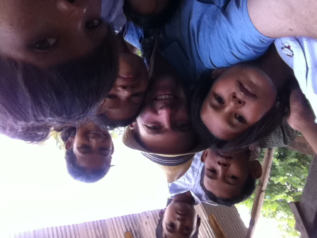
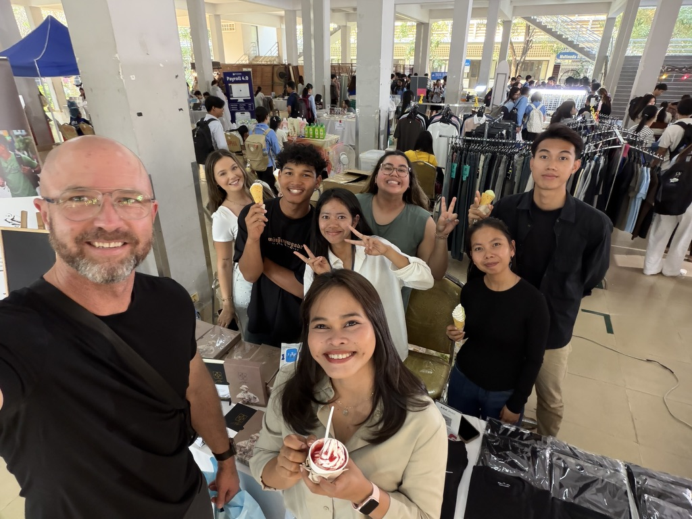
YWAM Siem Reap and YWAM Poipet — they lead both bases, and they'll be hosting us on the ground for the week.
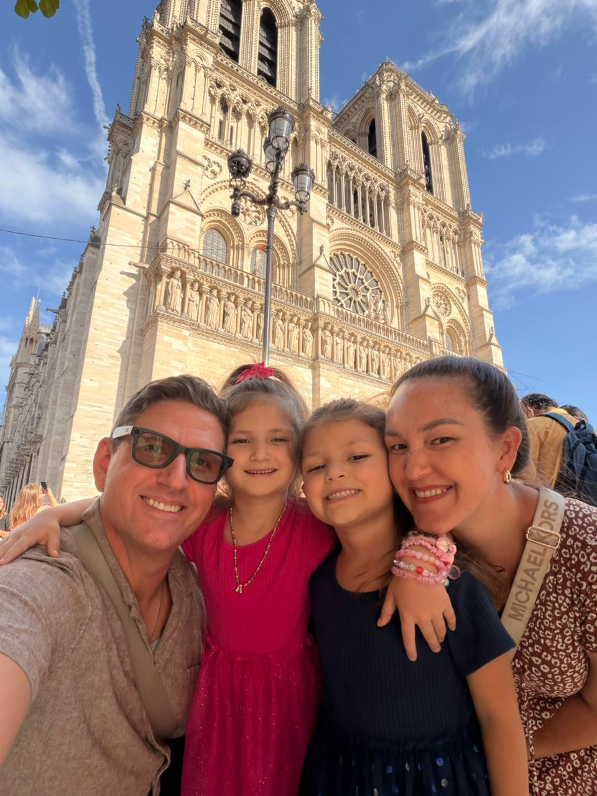
Uriah and Naomi lead two YWAM bases — the University of the Nations campus in Siem Reap and the base in Poipet on the Thai border. Between them they cover both ends of our route. They know the country, the church, and the people carrying this work, and they'll open doors we'd never find on our own.
Uriah is also one of the leading voices in social-media influence in Cambodia. When war displaced families along the Thai border this summer, a single post from him reached 1.4 million people and mobilized a $125,000 relief effort — food, shelter and supplies delivered by YWAM teams already on the ground. That's the reach we're walking into.
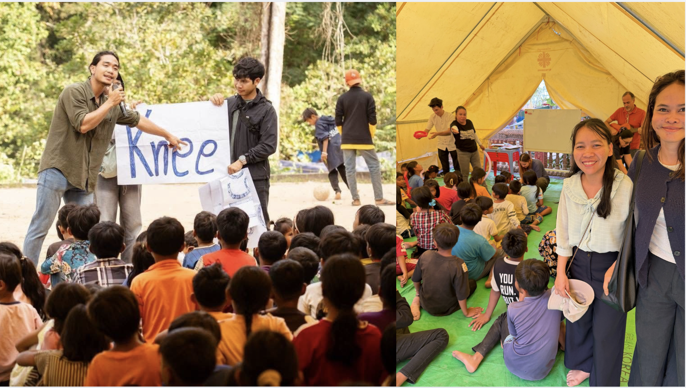
An open-jaw loop: fly into the capital in the south, travel northwest through the provinces and out to the Thai border, and finish near Angkor Wat before flying home from Siem Reap.
Sunday, Oct 25. Techo International — Phnom Penh's new airport, about 40 minutes south of the city. A host meets you there.
Friday, Oct 30. Siem Reap–Angkor International — note it's about an hour east of town, so we leave early.
Book as a single multi-city / open-jaw itinerary — KTI in, SAI out. Both are new airports as of 2025 and 2023; older booking tools may still show PNH and REP, which are closed. Round-trip economy from the U.S. typically runs ~$900–$1,300. Send your itinerary once booked so we can coordinate pickup.
Full days, some long drives, real ministry. Here's the shape of it — tentative, and being finalized with our in-country hosts.
Land at Techo International (KTI), transfer to the hotel, and settle in. Welcome dinner in the evening — meet the team you'll travel with and hear the shape of the week.
Morning at the Killing Fields and S-21 — the ground that makes the hope make sense. Evening at the New Life Educational Center: skills training, youth engagement, and a first look at the vision taking root.
Drive to Battambang (~3.5 hrs); lunch at Café Eden and a campus tour. Continue to Poipet for the afternoon — kids' classes and the community education hub near the Thai border.
Morning food and school-supply distribution at the displaced-families camp. Then drive to Siem Reap (~2 hrs) to regroup.
Angkor Wat in the morning. Afternoon of staff encouragement at the YWAM Siem Reap campus. Evening community night (~70 people) — worship, stories, and a send-off.
Transfer to Siem Reap–Angkor International (SAI) and head home carrying what you've seen.
Real photos from a real week on the ground.
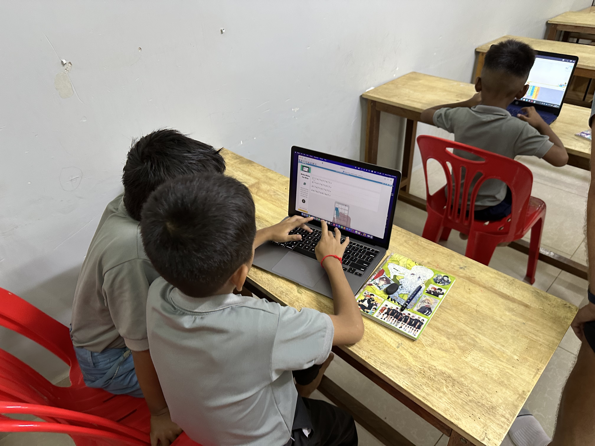
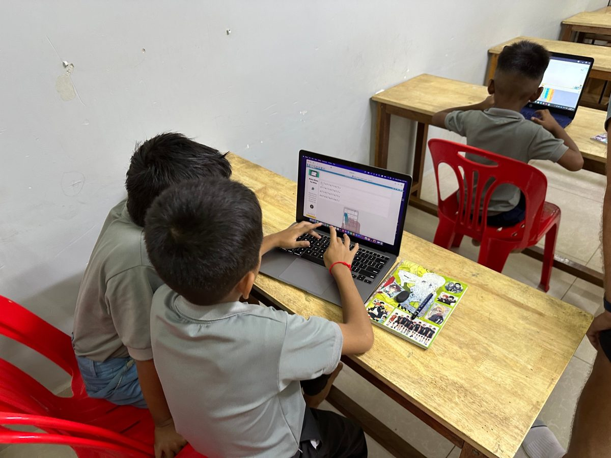
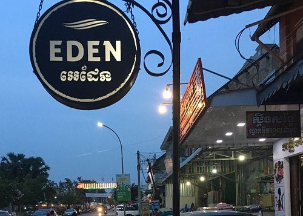
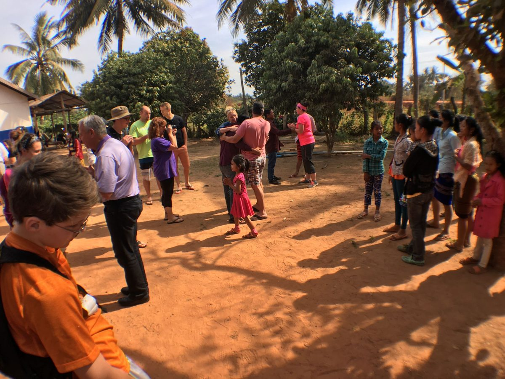
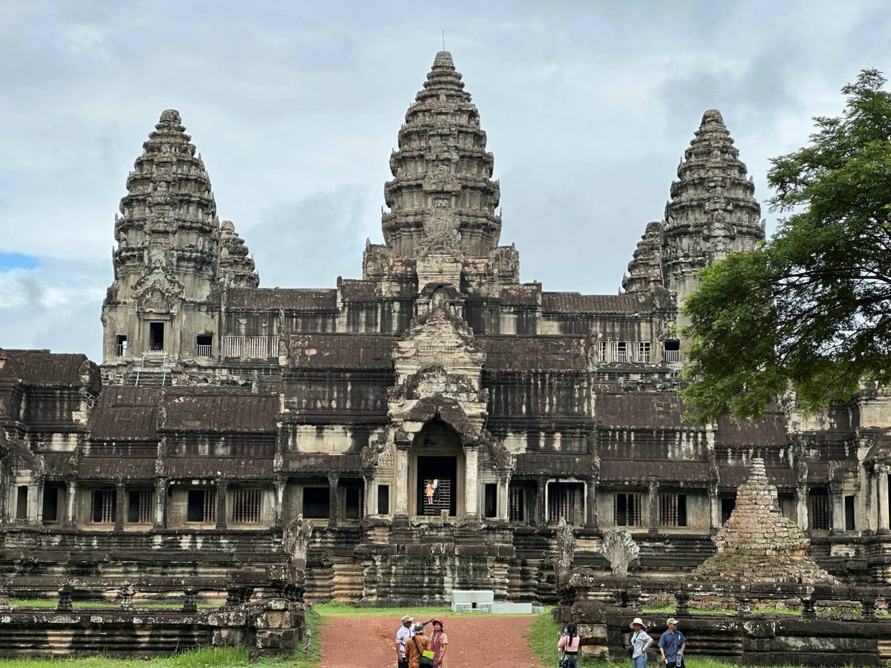
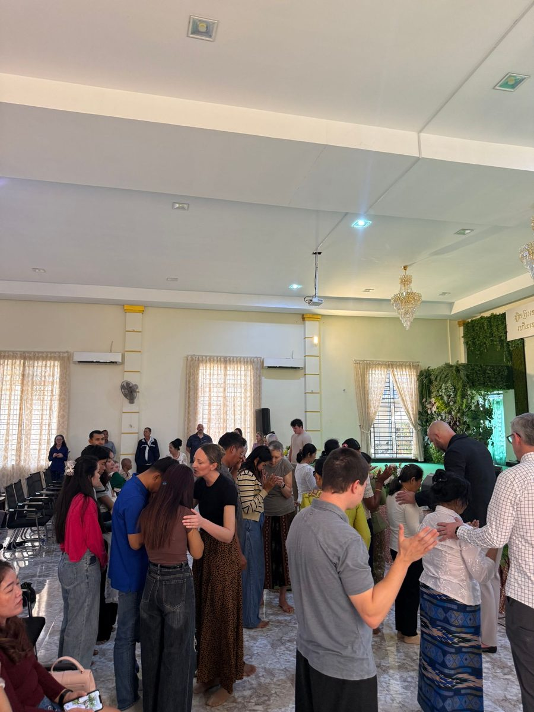
Book an open-jaw ticket: into Phnom Penh (KTI), out of Siem Reap (SAI). Roughly $900–$1,300 round-trip economy from the U.S.